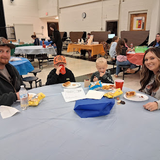
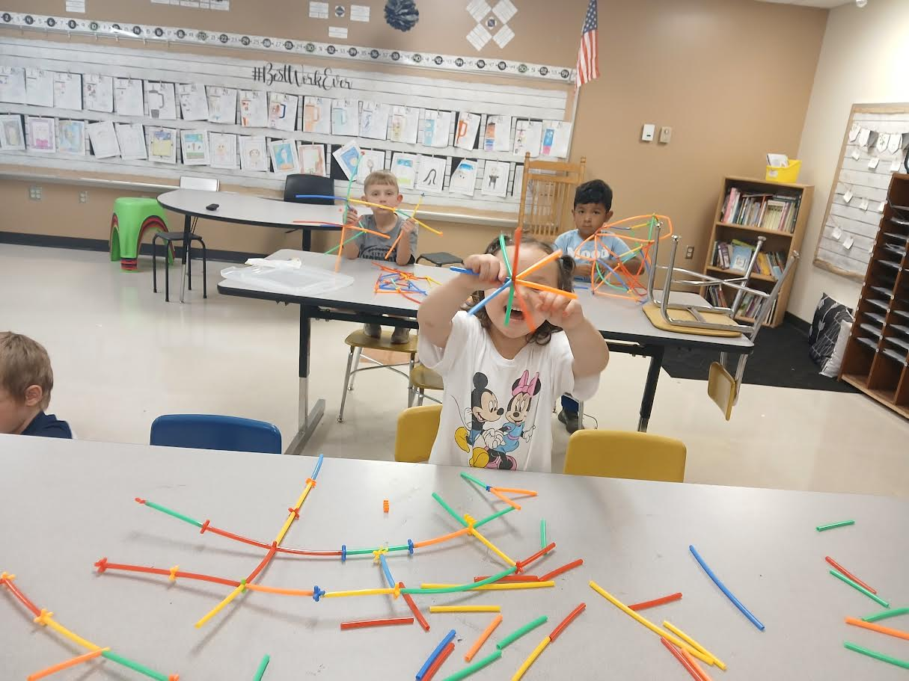
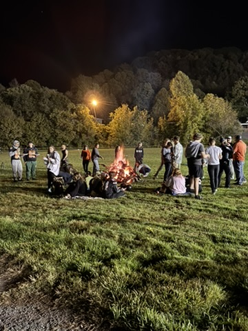

Cohort 1 📍 Region 7
Both of Norton City's schools — Norton Elementary and J.I. Burton High School — reached 100 percent progress on their social-emotional learning goals in the first quarter, the result of a Community Schools investment in calming spaces, expanded counseling, and access to community-based mental health providers at both buildings. Seventy-nine students receive targeted support, 47 of them through intensive case management.
At J.I. Burton High, the Brighter Paths program brings substance use awareness and healthy decision-making programming into the school. At Norton Elementary, an in-school clinic serves students individually while a schoolwide social-emotional learning curriculum reaches every classroom. The Raiders After-School Program extends that reach, serving approximately 100 students every day with academic tutoring, STEM activities, social-emotional learning, and arts enrichment at no cost to families.
520+ attended community engagement events at Norton Elementary and Middle School this fall.


At a Norton Elementary and Middle School community event, families connected with each other over dinner provided by the school. In the after-school program, students have access to enrichment time, like working with perler beads and geometric straw art. An evening visit from the Norton Fire Department brought one of the school's community partners onto school grounds.
208 students at Norton Elementary and Middle School received basic needs assistance during the first quarter.
Norton City exemplifies VCSI 3.1: Align to the Four Branches of Support. Norton City brings families and the community into the schools in authentic and meaningful ways, turning their schools into a neighborhood hub of support.
170+ attended community engagement events at J.I. Burton High School this fall.


J.I. Burton has established eight formal partnerships with local organizations that provide resources to help meet students' basic needs and collaborate with the school at community events. One event, a nighttime bonfire, brought approximately 20 students together for community building outside of the classroom.
145 students at J.I. Burton High School received basic needs assistance during the first quarter.
"The Community Schools model has deepened partnerships across the community."
— EO Partner